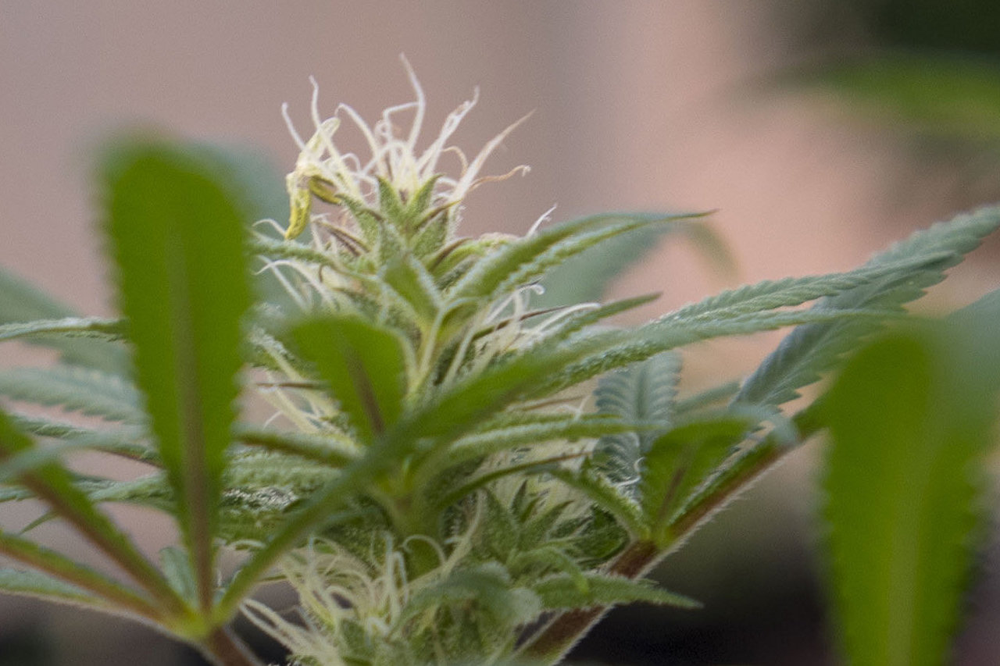
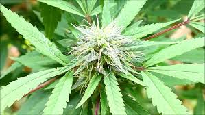
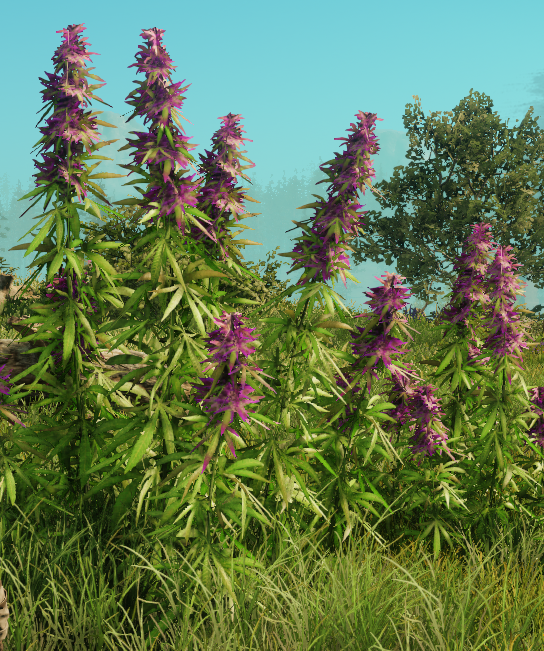
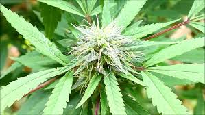
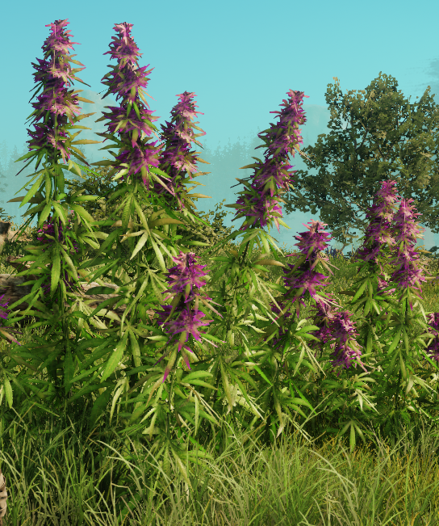
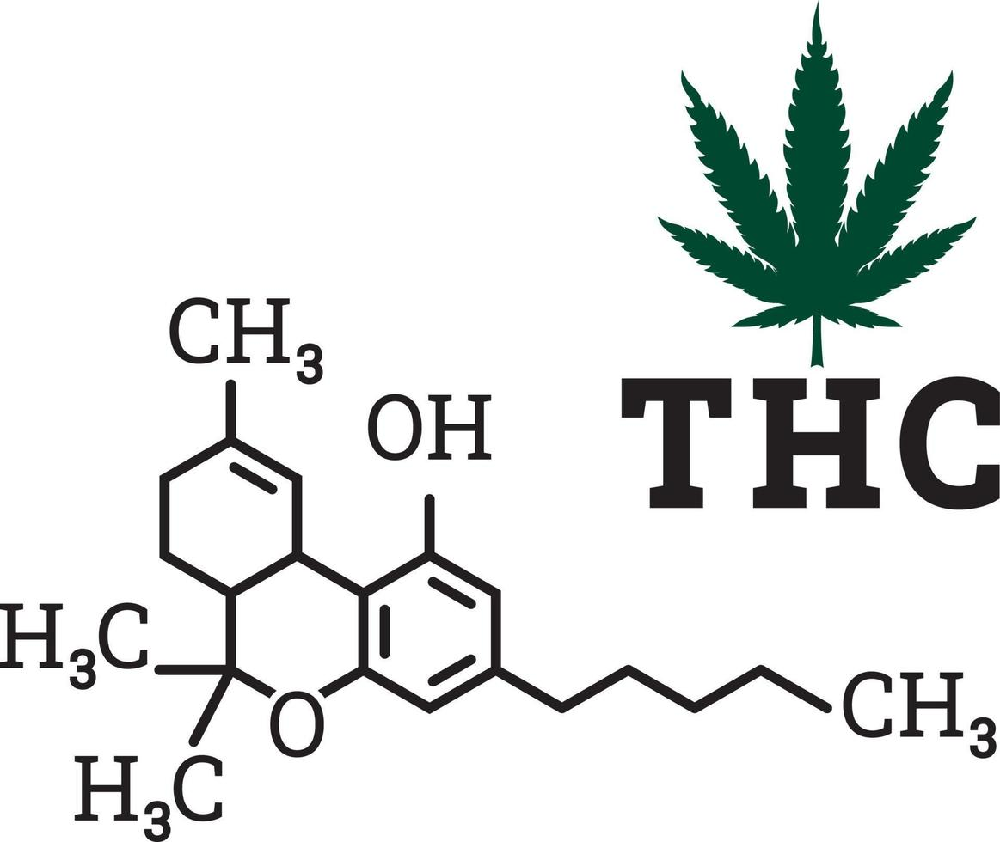
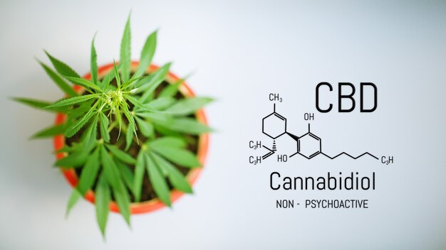
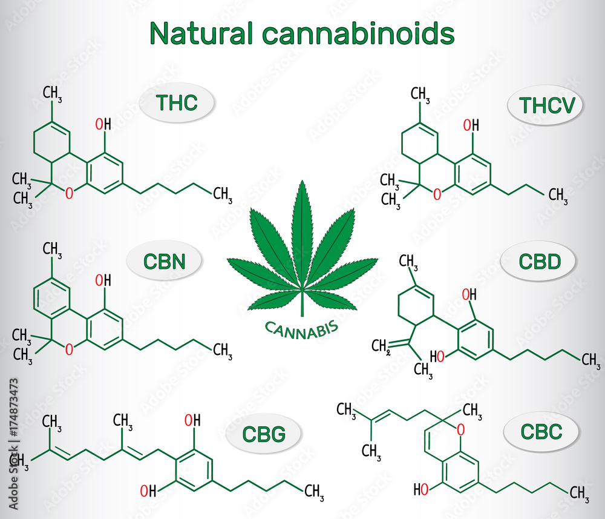

Cannbis sativa flowers are unisexual and the plants are often male or female.It is a short-lived flowering plant,static(male) plants usually taller and less strong than pistillate(female or male) plants.The flowers of the female plant are arranged in recemes and can procuce hundredes of seeds.Male plants shed pollen and die few weeks before female plant's seeds ripen.Under normal conditons with a light duration of 12 to 14 hours, the hereditary X and Y chromosomes produce both sexes in equal numbers.Although a plant becomes male or female by genetic factors,environmental factors, including the daily light cycle can alter sexsual expression.Naturally occuring single plant,both male or female parts infertile or fertile; but artificially induced "hermaphrodites" may have fully functional reproductive organs.The "female" seeds sold by most commercial seed suppliers are derived from synthetic "hermaphoroditic" female animals or plants treated with hormones or silver thiosulfate without the male genes.
 



Although the main psychoactive constituent of Cannabis is tetrahydrocannabinol (THC), the plant is known to contain more than 500 compounds, among them at least 113 cannabinoids; however, most of these "minor" cannabinoids are only produced in trace amounts.Besides THC, another cannabinoid produced in high concentrations by some plants is cannabidiol (CBD), which is not psychoactive but has recently been shown to block the effect of THC in the nervous system.Differences in the chemical composition of Cannabis varieties may produce different effects in humans. Synthetic THC, called dronabinol, does not contain cannabidiol (CBD), cannabinol (CBN), or other cannabinoids, which is one reason why its pharmacological effects may differ significantly from those of natural Cannabis preparations.
  The main psychoactive ingredient in cannabis is tetrahydrocannabinol(THC),the plantis known to contain more than 500 compounds,including at least 113 cannabinoids;However most of these "minor" cannabinoids are produced in small quantities.In addition to THC there is another cannabinoid cannabidiol(CBD) produced by some plants in high concentrations,which has not been psychoactive but has recently been shown to block the effects of THC in the nervous system.Changes in the chemical composition of cannabis varieties can have different effects on humans.Dronabinol,also known as synthetic THC,does not contain cannabidiol(CBD),cannabionol(CBN) or other cannabinoids, and is one of the reason why its pharamacological effects are significantly different from natural cannabis preparation.
In addition to cannabinoids,cannabis chemical compounds contain about 120 compounds that are resposible for its characteristic odor.These are mainly volatile tepenes and sesquiterpenses.α-Pinene,Myrcene,Linoleum,Limonine,Trans-β-ocimene,α-Turpinoline,Trans-karyophylline,Humulene,The characteristic odor of cannabis sativa contributes.Some hashish detective dogs are trained with karyphylline.Prenylthiol(3-methyl-2-butene-1-thiol)which has been identified as the main odor,produce a number of volatile sulfur compounds that contribute to the cannabis plant's skull-like odor.Thses compounds are found in much lower concentrations than the major terpenes and sesquiterpenes.However,they significantly contribute to the pungent odor of cannabis due to the low odor limits often found with thiol or other sulfer- containing compounds.
A cannabis plant in its vegetative growth stage needs more than 16-18 hours of light per day to remain vegetative.Flowering ususally occurs when darkness is at least 12 hours a day.The< flowering cycle can last anywhere between seven and fifteen weeks depending on the weather and environmental conditions.Insearch of psychoactive cannabinoid production,female plants are grown seperately from male plants to form parthenocarp in the fruit of the female plant(without seeds in spanish as "sin simila") and increases the production of cannabinoid-rich gum.In the soil,the optimum pHfor the plant is 6.3 to 6.8.During hydroponic growth,the nutrient solution is best between 5.2 and 5.8,this pH range is well suited for cannabis hydropoincs as it is hostile to most bacteria and fungi.Tissue culture multiplication has become important in the production of clinically important clones,and seed production is generally the prefferred medium for multiplication.Sativa plants have narrow leaves and grow well in warm climates.However they take longer to flower than their Indica counterparts,and they grow taller than the Indica cannabis varieties.